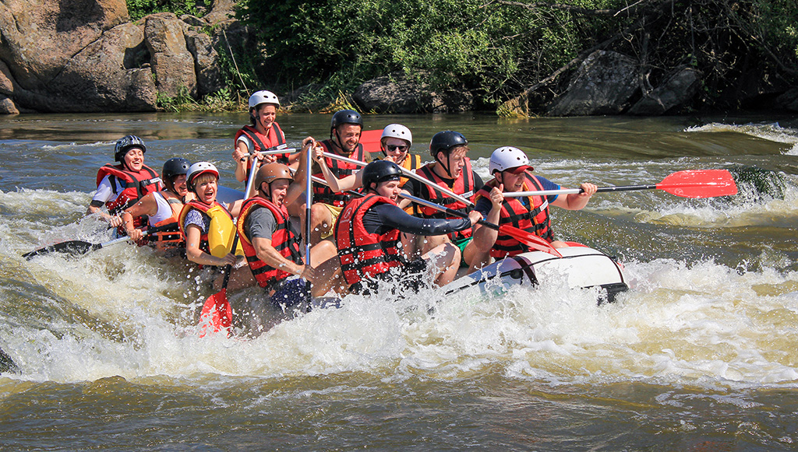

Our mission is to provide safe, exciting, and unforgettable rafting adventures while connecting people with nature. We believe in teamwork, exploration, and creating memories that last a lifetime.



Our mission is to provide safe, exciting, and unforgettable rafting adventures while connecting people with nature. We believe in teamwork, exploration, and creating memories that last a lifetime.
Founded in 2005, White Water Rafting Adventures began as a small group of outdoor enthusiasts who wanted to share their love for rivers and adventure. Over the years, we have grown into a trusted company known for safety, professionalism, and fun.